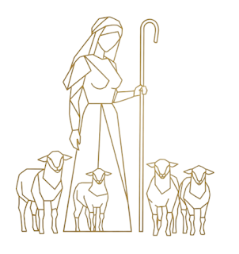

“Then the man said, ‘This is now bone of my bones and flesh of my flesh;
she shall be called Woman,
for she was taken out of Man.’”
—Genesis 2:23
“That is why a man leaves his father and mother
and is united to his wife,
and they become one flesh.”
—Genesis 2:24
The stories of Rebekah and Rachel, each meeting their future husbands at a well, are profound enactments of the spiritual union celebrated throughout the Bible. This sacred joining is the heartbeat of the Song of Solomon—the timeless poetic dance of bride and bridegroom, symbolising the soul’s yearning for and fulfilment in divine union.
Wells and Rivers: Sources of Life, Abundance, and Spiritual Encounter
The river that goes out to water the garden is called Abundance. It is the source that flows from the two trees. These waters nourish and feed many wells—among them the very wells where Rebekah and Rachel first appear. Such places are steeped in symbolism as sources of life, refreshment, and revelation.
In ancient tradition, wells are not merely physical places to draw water but spiritual wells where the soul encounters its counterpart—an intersection of the inner and outer worlds, of longing and fulfilment.
The Song of Solomon breathes life into this imagery:
“You are a garden locked up, my sister, my bride;
you are a spring enclosed, a sealed fountain.”
—Song of Solomon 4:12
Like a “sealed fountain,†the well is a sacred space where hidden life waits to be uncovered through recognition and union.
Shepherdesses at the Well: Guardians of the Flock and the Soul
An additional beautiful parallel between Rebekah and Rachel is that both are shepherdesses—caretakers of flocks, tending sheep near the wells where their destinies unfold.
Young Man
If you don’t know, O most beautiful woman, follow the trail of my flock,
and graze your young goats by the shepherds’ tents.
This role carries rich symbolism. Shepherding represents tending to what is vulnerable and precious—much like caring for the inner life, the soul’s flock. It evokes guidance, protection, and nurturing, which resonate with the spiritual themes of both stories.
Jacob’s own identity as a shepherd amplifies this connection; meeting Rachel, a shepherdess, is not merely a romantic moment but a symbolic convergence of inner care and outer responsibility—man and woman as co‑guardians of the soul’s journey.
The Song of Solomon’s garden imagery aligns with this, presenting the bride as both beloved and nurturer of the spiritual garden, the place where love and life flourish.
Rebekah: The Answer to Faithful Prayer
📖 Genesis 24
In Genesis 24, Abraham’s servant prays specifically for a sign at the well—to find the right bride for Isaac.
“And even before his words were ended, Rebekah, the daughter of Bethuel, the son of Milcah, who was the wife of Nahor, Abraham’s brother, came out with her water‑vessel on her arm.”
—Genesis 24:15
Rebekah’s immediate and generous response to this prayerful request manifests divine providence. Her willingness to water the servant and his camels without hesitation exemplifies the soul’s readiness to meet the seeker in faith and fulfilment.
This aligns with the Song’s portrayal of the bride as a beloved, whose presence answers the longing of the bridegroom’s heart:
“Before I realized it, my desire set me among the royal chariots of my people.”
—Song of Solomon 1:9
Rebekah’s story echoes this tender arrival—the soul responding to the seeker’s faithful call.
Rachel: Recognition and Passionate Union
📖 Genesis 29
Jacob’s encounter with Rachel at the well is recorded in Genesis 29. As he talks with the shepherds:
“While he was still talking with them, Rachel came with her father’s sheep, for she took care of them.”
—Genesis 29:9
Unlike the servant’s prayer, Jacob himself arrives and actively rolls the stone away to water her flock. His tears and kiss signify deep recognition—a soul finding its destined other half.
The Song of Solomon captures this impassioned meeting:
“I found the one my heart loves.”
—Song of Solomon 3:4
Rachel embodies the bride awakened by the bridegroom’s action and presence. The act of rolling the stone parallels opening the “sealed fountain,†allowing life to flow freely.
“A garden enclosed is my sister, my spouse; a spring shut up, a fountain sealed.”
Bride and Bridegroom: Soul and Spirit United
The Song of Solomon’s recurring theme of bride and bridegroom serves as a living metaphor for these biblical unions. The bride represents the inner world—intuitive, receptive, fertile—while the bridegroom is the conscious seeker or divine will pursuing unity.
“Let my beloved come into his garden
and taste its choice fruits.”
—Song of Solomon 4:16
Both Rebekah and Rachel’s stories portray the soul’s journey from separation to unity, prayer to action, waiting to recognition. Their meetings at the well illustrate the sacred merging of inner and outer, masculine and feminine, conscious faith and subconscious imagination.
The Immediate Response of Imagination to Assumption
Rebekah and Rachel appearing immediately as the men speak symbolizes the instant response of the imagination to conscious desire. In Neville’s terms, the spoken word is the focused assumption, and their arrival is the awakened imagination recognising and embodying that assumption. This moment captures the vital interplay where faith in the spoken word activates the subconscious, bringing the desired reality swiftly into being.
The Spiritual Dance of Union
Through the stories of Rebekah and Rachel and the poetic imagery of the Song of Solomon, the Bible invites us to witness and participate in the eternal dance of becoming one.
The well, the sealed fountain, the garden, the kiss—all are symbols of the soul’s awakening to its beloved, the divine creative power within.
Together, they remind us that the journey of union is both tender and powerful, patient and active—a holy meeting at the well of life.
Bride — Bridegroom Series | Brides at the Well | Eden Series | Genesis 2:24 Series | Marriage Series | Shepherd and Lamb Series | Song of Solomon Series | Time Series | Women in the Bible Series